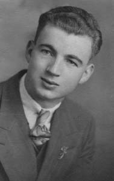
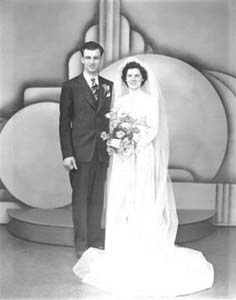
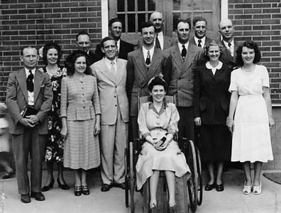
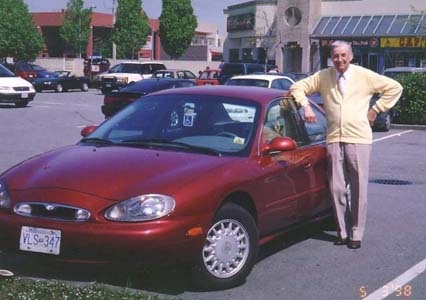
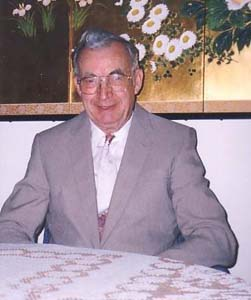
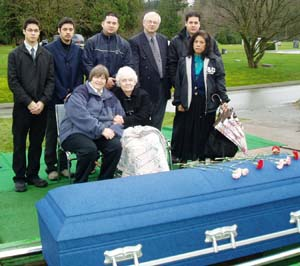

|
CLICK
|
|
to close this page.
|
BIOGRAPHY
Fred was born in Bessarabia (part of Roumania). His parents came to Canada in 1927 and farmed in the Hanna and Lavoy areas in Alberta. In 1937, the family relocated to Chilliwack, British Columbia, where they had a dairy farm. Eleven children were born, but four died in infancy. Seven lived to adulthood: three boys and four girls. His parents had a strong faith in the Lord, and the whole family faithfully attended Sunday School and church. Fred acquired a steam engineer’s certificate and worked at various jobs in Vancouver and at Texada Island. When he was the steam engineer at a large dry-cleaning plant, he met a very attractive young lady named Viola Larsen. She invited Fred to attend her youth group and church. He did, and it was during this time he made a life-long commitment to the Lord. He felt the Lord wanted him to be in ministry either as a missionary or a pastor. Viola also felt the calling of the Lord in her life, so when the two shared their life’s goals and dreams, it led to their marriage on May 4, 1946. They went off to Prairie Bible Institute, and in due time they were accepted as missionary candidates to China. However, Viola contracted polio, leaving her a paraplegic – able to use crutches, but also needing the use of a wheelchair. She required a lot of help throughout the years, and Fred became her loyal care-giver, sharing with her his strength, serving as her legs, and taking on many responsibilities which an able-bodied wife would have performed. He never complained and accepted Viola’s disability with love, devotion, and loyalty.
Throughout the years, Fred served in several different vocations, the main one being a pastor. He was ordained under the North American Baptist Conference – known as The German Baptists in earlier years. At his first two churches, many of the services and prayer meetings were conducted in the German language.
North American Baptist Churches Served from 1949 - 1977
(As you will notice below, some of the churches had stations. He preached at these on Sunday afternoons, so it was a full day of preaching: morning, afternoon, evening.)
Hilda Baptist Church, Alberta (close to Medicine Hat),
with stations at Schuler and Burstall
Olds Baptist Church, Alberta,
with a station at Torrington
Rabbit Hill Baptist Church, South Edmonton,
with a station at Warburg
Lauderdale Baptist Church, Edmonton
Springside Baptist Church, Saskatchewan
Northgate Baptist Church, Edmonton
McKernan Baptist Church, Edmonton (Part-time)
Wiesenthal Baptist Church, Millet, Alberta
Part-time Pastorates with the Baptist Union of Western Canada:
First Baptist Church, Nanaimo (for a few months)
First Baptist Church, Port Alberni (for one year)
Teaching:
Fred taught ten years in the Edmonton Public School system.
In Nanaimo, he was principal of a Christian school for two years.
Chaplaincy:
In 1981-85, Fred was the chaplain at the Evergreen Baptist Home in White Rock.
Miscellaneous:
Fred utilized his holiday time and periods of time in his retirement years to visit 39 countries. He was able to visit his son Gerhart who was teaching under NAB missions in Cameroon, Africa, as well as NAB missionaries in Japan and Brazil. He loved to talk about his overseas adventures and the enrichment his trips brought to his life. He was known in his churches for being a “people” pastor. Extensive home visitation was one of his strengths. Day or night he would be with those who were experiencing tragic experiences. His messages were positive and uplifting. His humor and optimistic spirit encouraged and inspired people.
Fred took medication for his heart for about ten years. In the middle of December, he began to experience problems, and he went to the hospital. He was not home for Christmas. Although he was released from the hospital, his condition worsened, and he was readmitted. He passed away peacefully with what was termed “congestive heart failure.”
He leaves to mourn:
His devoted wife of 58 years - Viola
His son Gerhart, married to Penny. They have four sons: Christopher, Wesley,
Lionel, and Neil. The family lives in Richmond, BC. Gerhart is a Senior Consultant with RBC Financial Services.
His daughter Susan. After teaching ESL in Japan, China, Australia, Thailand,
three years ago, Susan came back to Canada to live with her parents,
and it was always a happy thought to Fred that if something should happen
to him, Susan would be here to help Viola. Susan does private ESL tutoring.
Out of the seven Pahl siblings who lived to adulthood, four are deceased:
Alma (Speidel), Frieda (Miller), Olga (McKinstry), and now Fred.
Living are:
His sister Emma, married to Alvin Effa, residing in Chilliwack
His brother Art married to Anne, residing in California
His brother Dr. Ed married to Judy, residing in Oregon
Although we mourn the passing of a wonderful person like Fred Pahl, we know that the Lord will give all of us grace and strength to live for Him until we meet again in heaven.
2 Timothy 4:7, 8 is appropriate (slight paraphrase):
Fred has fought a good fight. He has finished his course. He has kept the faith.
Henceforth there is laid up for him a crown of righteousness,
which the Lord, the righteous judge, shall give him at that day;
and not to him only, but unto all them also that love his appearance.
THE JOURNEY
Don’t think of him as gone away – his journey’s just begun,
Life holds so many facets – this earth is only one.
Just think of him as resting from the sorrows and the tears
In a place of warmth and comfort where there are no days and years.
Think how he must be wishing that we could know today
How nothing but our sadness can really pass away.
And think of him as living in the hearts of those he touched.
For nothing loved is ever lost – and he was loved so much.

Fred - age 21 |

Married May 4, 1946
|
|  |
<< This photo was taken at a church conference in Medicine Hat, Alberta, about 1953. I was using an old wooden wheelchair loaned to me by the Red Cross. Fred is standing tall behind me. Minister friends and delegates are pictured.
|

Fred loved his Mercury Sable car –
the last car he would drive.
. |

It looks as if Fred is waiting for his dinner with great anticipation.
|
COMMITTAL
Fred was buried in a cemetery close to White Rock: Victory Memorial Gardens. Only the immediate family was at the committal: Viola, Susan, Gerhart and his wife and children. The present chaplain at the Evergreen Baptist Home - Rev. Robert Lang – brought a few words of comfort and also sang one of Fred’s favorite hymns “Precious Lord, Take My Hand”. Each member of the family took a turn in placing a single carnation on the coffin and giving a short word of tribute to husband, father, grandfather. In the morning, there was a heavy rain, and Viola was so wishing that the sun would shine. By afternoon, the rain had tapered off, and when Viola was giving her short tribute, a big patch of blue sky appeared. Viola exclaimed, “Look, after the storms of life, the sun will shine again.” By the time the family reached the fifth floor of the condo, there was brilliant sunshine and a gorgeous sunset. How meaningful it was!
|  |
Back Row from Left to Right:
Neil Pahl, Lionel Pahl, Chris Pahl,
Gerhart Pahl, Wesley Pahl
Front Row from Left to Right:
Susan Pahl, Viola Pahl,
Penny Pahl
|

SUNSET VIEW FROM VIOLA’S CONDO IN WHITE ROCK.
EVERY TIME SHE LOOKS
AT THE SUNSETS,
SHE WILL THINK LOVINGLY OF FRED
WHO NOW LIVES
“BEYOND THE SUNSET"
MEMORIAL SERVICE
Held February 12, 2005 At the Evergreen Baptist Home Chapel and Lounge
Reported By Viola Pahl
Approximately eighty people attended the private Memorial Service. It was held at the Evergreen Baptist Home – Fred had been chaplain there 1981-1985, and in the last few years, we were attending most of the services at the Home. We used the chapel for the worship part of the Memorial. Pastor Robert Lang, Chaplain of the Home, chaired the service and also sang the beautiful hymn “Beyond the Sunset.” Our organist was Molly Rapske. Her husband Rudy (now deceased) was the Administrator of Evergreen Home for many years. We first met the Rapskes in the 1950’s when we were in our first pastorates.
From 1960 to 1965, Fred served the Springside Baptist Church, near Yorkton, Saskatchewan. There were about 250 members, and this particular church was a highlight in our ministry years. Pastor and church members shared common goals. In the ensuing years, there has always been close contact with many from the Springside church family. Several years ago, someone from that area said to Rev. Pahl: “There’s a new pastor at Springside Church, and do you know what people are saying? They said, ‘Here’s someone like our beloved Fred Pahl.’” We received an e-mail from this pastor at Springside – Dr. Clifford W. Bergman, - and here is what he said:
My wife and I have been in Springside for nearly two and a half years and are having a delightful time here. This is our 25th year of pastoral ministry, and of the four Churches we have served in, this has been the easiest, and might I say, the most fun. The people in Springside are so supportive and affirming. I am sure that you and your husband had a significant part in shaping this Church into the unique Church it is. During my time here, many people have often commented to me about your ministry. One of the reasons, apparently, is that many have said I look just like Fred, and could be mistaken for him. After the service on Sunday, at which time I shared with our congregation about your husband’s passing, and made your letter available to them, a number commented on the special place you had in their lives. May the Lord continue to bless you and care for you in a special way as you say, “Good bye” to your husband. My wife and I feel that we are benefactors of your ministry here and are pleased to be able to reap the benefits of your efforts.
The speaker was very special: Rev. Robert Erion, a second cousin of Fred’s, was home on furlough from Thailand. Robert and his wife Ruth have served the Lord in Thailand for many years, and he is the Field Director in Thailand for the Overseas Missionary Fellowship.
After singing another favorite hymn of Fred’s - The Love of God - we all went down the hall to the large lounge area, where we sat informally on comfortable couches and chairs. I chaired this part of the service. Various groups were introduced, i.e. relatives, clergy, friends from the days of our youth, etc. It was here that I gave my tribute to Fred. The Muellers from the Sunshine Ridge Baptist Church served a lovely lunch for all of us.
Present at the service were a number of relatives from Fred’s side of the family - there are many! His sister Emma, married to Alvin Effa, was present. They reside in Chilliwack. Not able to attend were his two brothers: Art Pahl and his wife Anne who live in California; and last-minute illness prevented Dr. Ed Pahl and his wife Judy from Portland coming to the Memorial. I come from a very small family - I have one aunt by marriage and four first cousins left, plus their families. Charlene, married to Allan McDonald, was my little flower girl in 1946, and she and three of her daughters from the Chilliwack area were able to attend.
|
CLICK
|
|
to close this page.
|